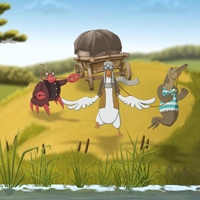
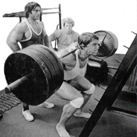

М‘язи. Сила м‘язів

Взаємодія тіл. Сила
Будь-які зміни в природі відбуваються внаслідок взаємодії між тілами. При взаємодії можуть змінюватися швидкості тіл або їх частин. Сила, як фізична величина, кількісно характеризує дію одного тіла на інше.
Сила як фізичне поняття може бути більшою чи меншою, як і викликані нею зміни в стані тіла чи його частин. Наприклад, людина має понад 600 скелетних м‘язів, які дають їй змогу пересуватися в просторі - ходити, бігати тощо. Прикладаючи силу людина може приводити в рух окремі частини тіла та підтримувати його рівновагу та певне положення.
М‘язи у дорослої людини становлять 44% загальної маси тіла. Кожен м‘яз складається з великої кількості м‘язових волокон. Їхній діаметр - 0,01-0,1 мм, а довжина може досягати кількох сантиметрів. Їхня сила визначається площею поперечного перерізу всіх волокон м‘яза, тобто їхньою кількістю та товщиною. Вважається, що в дорослої людини чисельність м‘язових волокон стала, а їхній діаметр залежить від тренованості м‘язів.
Фізичні якості м’язів

Однією з фізичних якостей м’язів є сила м’язів. Вона характеризується величиною максимального напруження , яке може розвинути м’яз під час збудження. Сила м’язів залежить від маси білків які скорочуються, кількості м’язових волокон, частоти нервових імпульсів, що надходять до м’яза. Чим більше у м’язі білків, тим більша його сила. Отже , силу м’язів можна збільшити, збільшуючи кількість білків м’язової тканини. Цього можна досягти внаслідок правильного фізичного тренування м’язів . Заняття силовими вправами слід розпочинати не раніше 14 – 15 років.
Швидкість скорочення м’язів визначається часом, за яким м’яз скорочується і розслаблюється. Чим коротший цей час, тим більша швидкість скорочення. Тонус м’язів - це стан їхнього постійного незначного напруження. Завдяки тонусу м’язів зберігається постава тіла. Тонусі скорочення м’язів живота утримують внутрішні органи у певному положенні. Тонус не посмугованих м’язів судин забезпечує необхідний діаметр судин, а отже , і кров’яний тиск. Тонус м’язів визначається їхніми природними властивостями і впливом нервової системи. До м’язів постійно надходять нервові імпульси . Вони підтримують незначний тонус м’язів, зниження якого негативно впливає на діяльність усього організму. Причиною зниження тонусу м’язів можуть бути негативні емоції ,порушення режиму дня, особливо недосипання, перевтома, нестача вітамінів.
Скелетні м‘язи - це основне джерело механічної енергії тіла людини. М‘язи, як фізичні тіла мають свої властивості - пружність і скорочення.
Пружність – це здатність м‘язів при розтягуванні відновлювати первісну довжину; при цьому в м‘язі виникає енергія пружної деформації. Тобто ,м‘яз можна порівняти з пружиною або гумовим джгутом, чим більше вона розтягнута, тим більша енергія в ній зосереджена. Наприклад, при метанні, у фазі деформації, яка у фінальній частині метального руху перетворюється в кінетичну енергію руху снаряду.
Скорочення – це здатність скорочуватися при збудженні, при цьому м‘яз коротшає і виникає сила тяги.